Системы хранения
Жалюзийные фасады
Фасады и дверцы с ламелями для шкафов, ниш, гардеробных и технических зон.
отдельная страница→
Вуд Сервис производит мебель, фасады, кухни, системы хранения, панели, двери, стулья, лежаки, брендированные боксы и нестандартные изделия для домов, отелей, офисов, ресторанов и коммерческих объектов.
Работаем с разными форматами: от одного изделия до серии для объекта. Подбираем размеры, материалы, покрытие и конструкцию под интерьер, задачу клиента и условия эксплуатации.
производство в спб · частные заказы · дизайнеры · horeca · офисы · предприятия
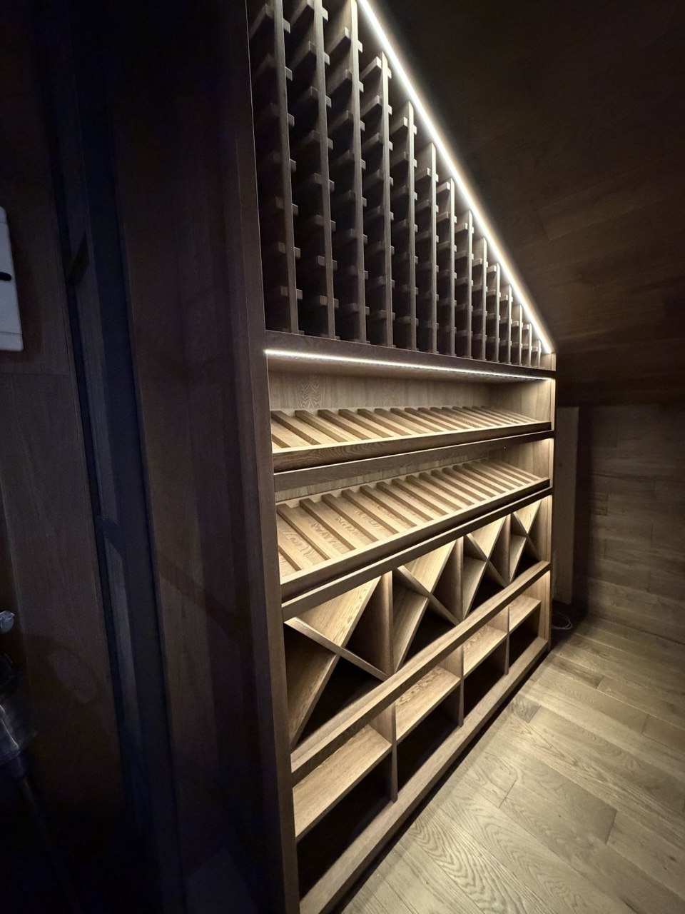
Винные стеллажи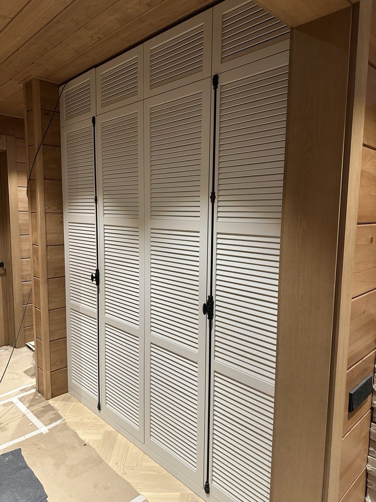
Жалюзийные фасады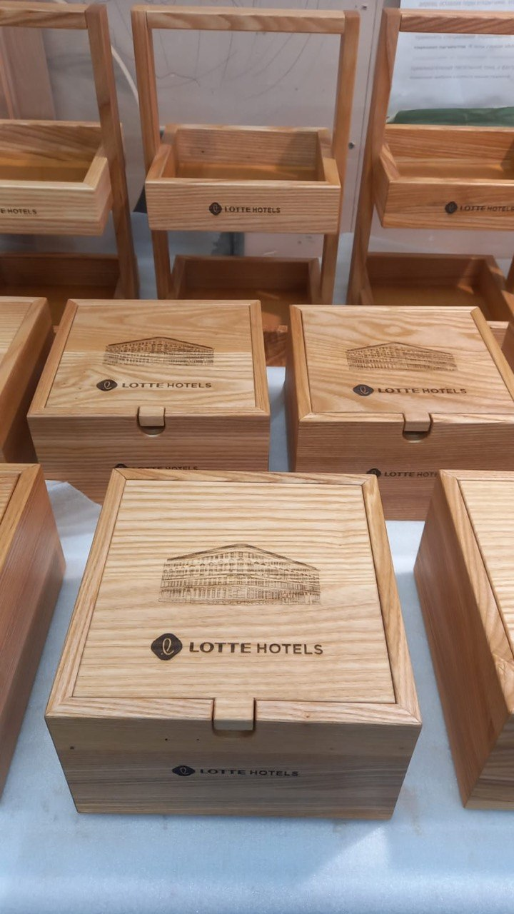
Брендированные изделия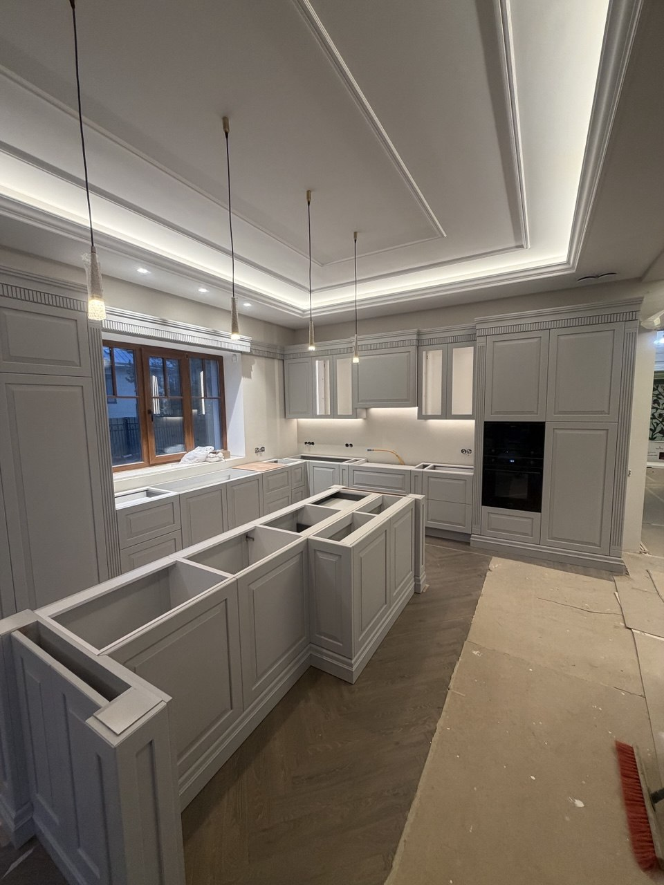
Кухни и мебельВуд Сервис работает не только с частными интерьерами. Производство берёт задачи для отелей, ресторанов, офисов, предприятий, дизайнеров, архитекторов и брендов: от фасадов и шкафов до комплектов мебели, серийных изделий и предметов с брендированием.
Мы показываем широту производства через реальные работы: жалюзийные фасады, кухни, корпусную мебель, стулья, кресла, лежаки, винные стеллажи, деревянные боксы, декоративные панели и решения для коммерческих пространств.
Каждая карточка ведёт в портфолио или отдельную страницу направления. Внутри — больше фотографий, ракурсы, детали, производство и быстрый контакт для расчёта похожего изделия.
Фасады и дверцы с ламелями для шкафов, ниш, гардеробных и технических зон.
Кухни, острова, шкафы, гардеробные, стеллажи и системы хранения под размеры помещения.
Брендированные боксы, мебель и серии предметов для отелей, ресторанов, офисов и предприятий.
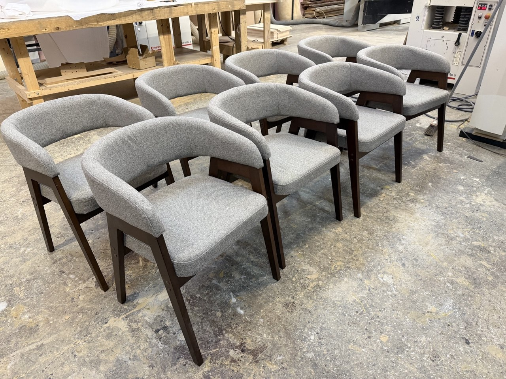
Кресла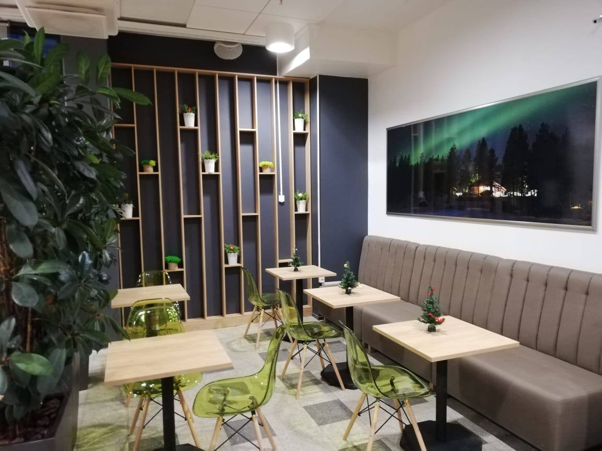
Офисная зона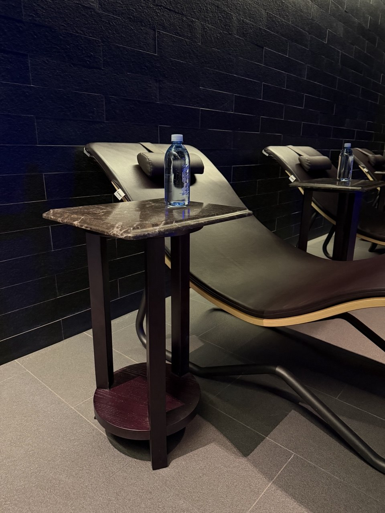
SPA / лаунж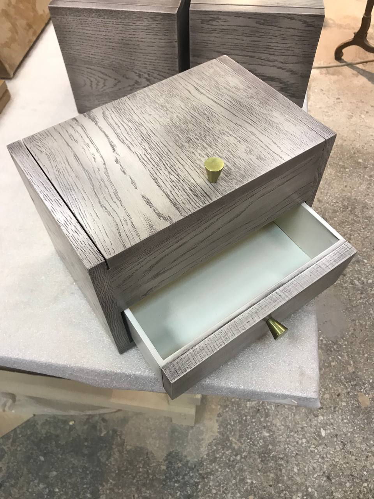
Деревянный боксИзготавливаем жалюзийные фасады для шкафов, гардеробных, ниш, технических зон, постирочных, бойлерных и встроенной мебели. Это одно из самых популярных направлений, поэтому для него мы заложили отдельную страницу, на которую можно вести Яндекс-рекламу и получать прямые обращения.
Фасады производятся под конкретный проём: с подбором размера, материала, покрытия, цвета и фурнитуры.
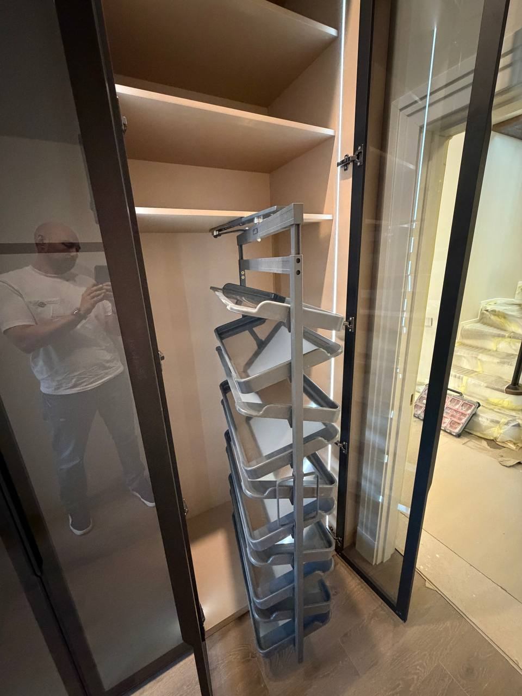
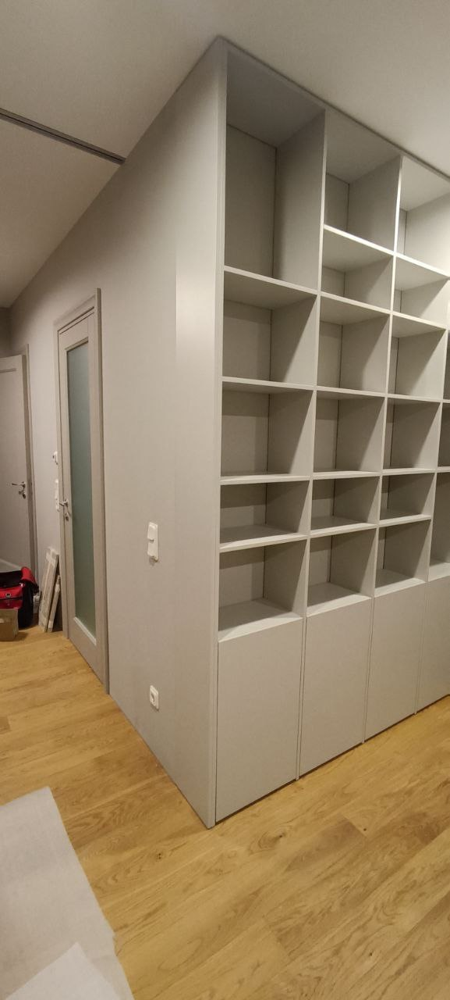
В одном заказе может быть отдельный фасад или стул, в другом — кухня, серия кресел, деревянные боксы для бренда, мебель для зоны ожидания, отельный номер или коммерческое пространство.
Сильная сторона Вуд Сервис — не один узкий продукт, а возможность работать с деревом в разных форматах: от корпусной мебели и фасадов до интерьерных изделий, предметов для HoReCa и серийных решений для бизнеса.
Обсудить проект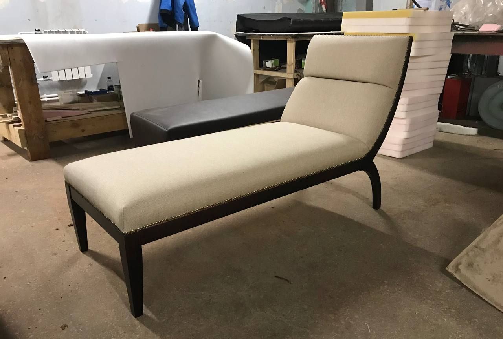
Мебель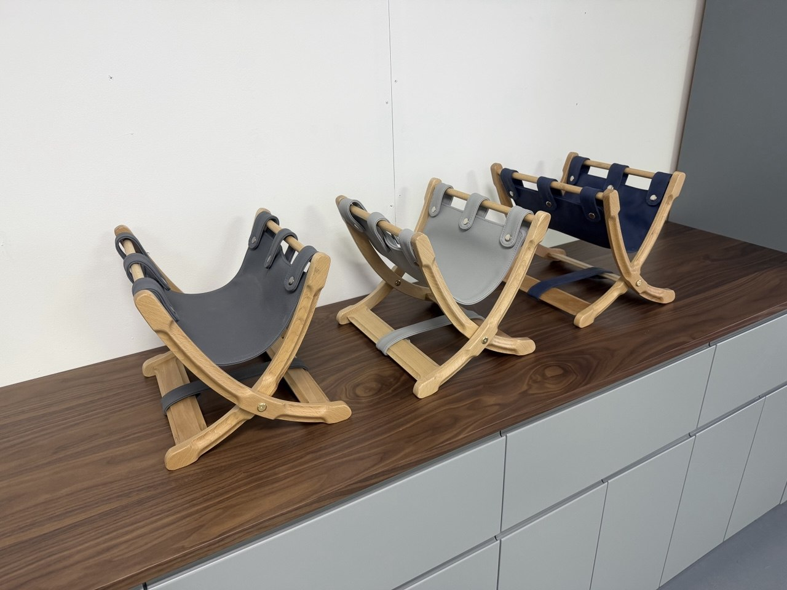
ИзделияНаправления охватывают и частные интерьеры, и коммерческие объекты: от базовой корпусной мебели до специальных изделий, фасадов, брендированных предметов и сложных нестандартных решений.
Кухни, шкафы, гардеробные, столы, стулья, кресла, тумбы и полки.
Жалюзийные фасады, МДФ-фасады, декоративные панели, перегородки и двери.
Отели, рестораны, офисы, SPA-зоны, лаунжи, ресепшн и зоны ожидания.
Деревянные боксы, подарочная упаковка, серии предметов, корпоративные заказы.
Лежаки, кресла, винные стеллажи, конструкции по чертежам и референсам.
Цена зависит от размера, материала, покрытия, фурнитуры, сложности конструкции, объёма заказа и условий монтажа. Поэтому сначала мы уточняем задачу, а затем готовим расчёт — так вы получаете не абстрактную цену, а ориентир именно под свой проект.
Напишите в приложение MAX, Telegram, позвоните или отправьте письмо. Можно начать с фото, размеров или простой идеи — дальше уточним детали и подготовим расчёт.